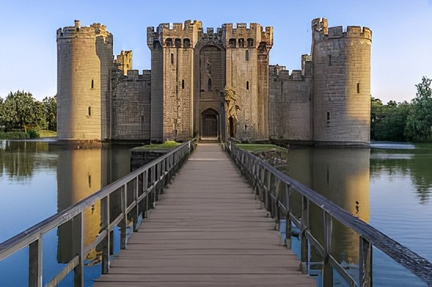
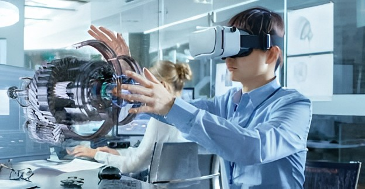

Bienvenido a Historia Universal
Este sitio ofrece una visión integral del desarrollo histórico de la humanidad...
Antigüedad
La Antigüedad comprende el periodo desde la invención de la escritura hasta la caída de Roma...
Edad Media
Fue una era dominada por el feudalismo, la iglesia y los conflictos territoriales...
Edad Moderna
Con el Renacimiento, la Reforma y el descubrimiento de nuevos continentes...
Edad Contemporánea
Desde la Revolución Francesa hasta la era digital actual...
Galería de Eventos Históricos


Línea del Tiempo Histórica
- 3000 a.C.: Invención de la escritura
- 476 d.C.: Caída del Imperio Romano
- 1492: Descubrimiento de América
- 1789: Revolución Francesa
- 1914: Primera Guerra Mundial
- 1939: Segunda Guerra Mundial
- 1969: Llegada a la Luna
- 1989: Caída del Muro de Berlín
- 2020: Pandemia de COVID-19